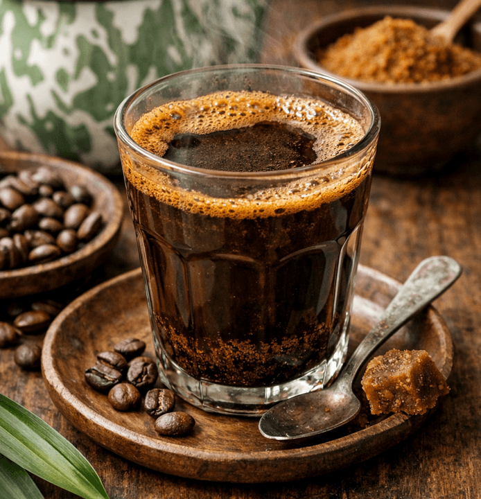
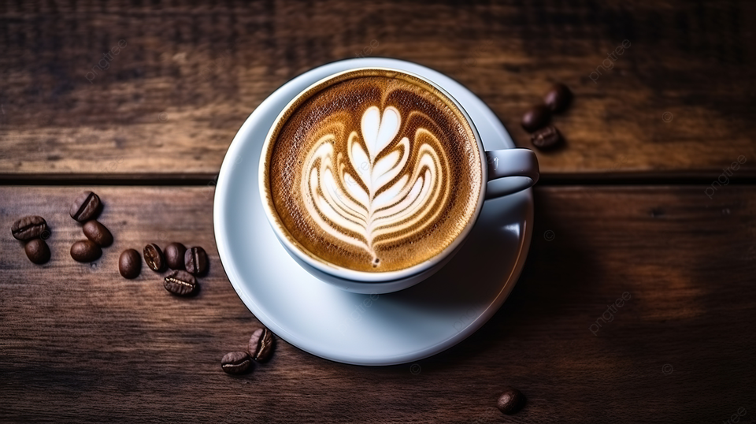

Kopi Tubruk Signature
Diseduh kasar ala tradisional, pekat, dan pahitnya tegas.
UMKM Pekalongan
Kopi lokal pilihan untuk teman belajar, bekerja, dan bersantai — diseduh sederhana agar rasa aslinya tetap terasa.

Profil Usaha
Ngopa Ngopi merupakan UMKM kopi lokal yang menyediakan berbagai pilihan minuman kopi dengan cita rasa yang khas.
Kami menggunakan bahan kopi lokal berkualitas dan mengolahnya dengan cara sederhana agar rasa dan aroma kopi tetap terasa.